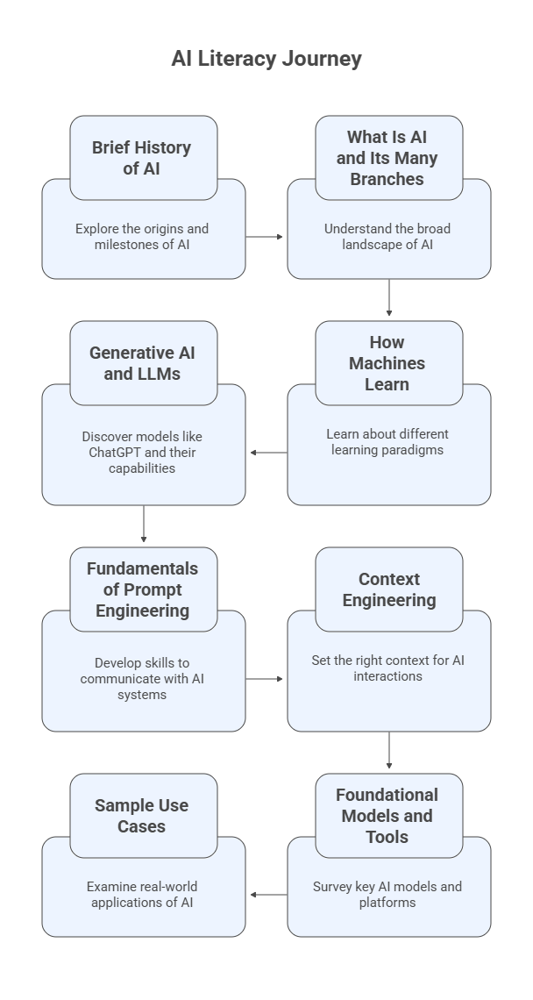

AI Literacy#
Welcome to the AI Literacy Program, part of the FGCU AI Academy led by the Dendritic Institute for Human-Centered AI & Data Science at Florida Gulf Coast University. The AI Literacy Program is the foundational offering of the FGCU AI Academy, designed as a gentle introduction to the world of Artificial Intelligence for learners from all backgrounds. As the first in a series of Academy programs, it helps students, professionals, and community members build a common understanding of what AI is, how it works, and how it is transforming everyday life. Through accessible examples and human-centered discussion, participants learn to navigate the opportunities and challenges of AI with curiosity, confidence, and critical thinking — setting the stage for deeper technical and applied studies in subsequent Academy pathways. This Jupyter Book is designed to be your interactive guide through the world of Artificial Intelligence — from its origins and foundations to the basics of Generative AI (GenAI) and Large Language Models (LLMs).
Program Goals#
The goal of this program is to equip learners with enough understanding to confidently use and critically evaluate Generative AI tools. By the end of this journey, you will:
Explain what AI is, where it came from, and where it is heading.
Recognize the main branches, paradigms, and learning strategies that underpin modern AI.
Develop awareness of how AI systems are built, trained, and applied responsibly.
Gain fluency in Generative AI tools, prompt engineering, and context design.
Learn to assess AI outputs with a critical, human-centered mindset.
Whether you are a student, professional, or community member, this program provides the foundation to engage meaningfully with AI in your field.
Learning Objectives#
By completing this program, you will be able to:
Describe the historical evolution of AI and its key milestones.
Explain the core concepts of machine learning, data, and model training.
Distinguish between different AI terminologies — computational intelligence, machine learning, deep learning, etc.
Experiment with Generative AI and LLMs, understanding how they are used to create content.
Apply prompt engineering techniques to guide AI outputs effectively.
Design context-aware interactions that align AI responses with purpose, audience, and ethics.
Reflect on real-world use cases evaluating both potential and limitations.
Our Journey#
AI Literacy is structured as a sequential learning pathway, blending history, concepts, and practice.
Each module builds on the previous one — guiding you from “What is AI?” to “How can I work with it responsibly?”
Module |
Theme |
Focus |
|---|---|---|
1 |
A Brief History of AI |
From the dawn of computing to the present, tracing AI’s evolution across decades. |
2 |
What is AI and Its Many Branches |
Exploring the diverse approaches — machine learning, neural networks, natural computing, data science, etc. |
3 |
How Machines Learn |
Understanding learning paradigms and strategies that power intelligent systems. |
4 |
Generative AI & Large Language Models |
Unpacking how GenAI systems and LLMs create new content and simulate reasoning. |
5 |
Fundamentals of Prompt Engineering |
Learning to communicate effectively with AI through structured prompting. |
6 |
Context Engineering |
Setting the right stage for AI: audience, purpose, tone, and ethical framing. |
7 |
Foundational Models and Tools |
Surveying some key AI frameworks, platforms, and copilots. |
8 |
Sample Use Cases |
Examining practical applications across domains. |

How to Use This Jupyter Book#
Navigate the modules using the left-hand sidebar or the Next/Previous buttons at the bottom of each page.
Download pages as
.mdor.pdffor your notes.Look for 💡 Examples, ⚙️ Exercises, and 📘 Further Reading sections to deepen your understanding.
Many pages include interactive code cells you can copy and launch in most LLM models, such as ChatGPT, Claude, Gemini, Co-Pilot, etc.
Use this book alongside the Canvas course, masterclasses, videos, and AI tool demonstrations offered by the FGCU AI Academy.
Human-Centered AI#
This program embraces a human-centered approach to AI:
AI is not replacing people — it is amplifying our capacity to think, create, and solve.
As you advance through these modules, keep reflecting on:
How can AI become a partner in human learning, creativity, critical-thinking, and problem-solving?
About the Instructor – Dr. Leandro Nunes de Castro#
Professor in the Department of Computing and Software Engineering, U.A. Whitaker College of Engineering, FGCU.
Ph.D. in Computer Engineering with 30 years of experience in Artificial Intelligence, Data Science, and Natural Computing.
Director of the Dendritic Institute for Human-Centered Artificial Intelligence and Data Science at FGCU.
Author of various AI and Data Science books and papers, and recognized among the Top 2% most influential researchers in Computer Science worldwide.
Experienced entrepreneur, researcher, and educator with a focus on applying AI for innovation, business, and societal impact.
Active mentor and collaborator with international academic and industry partners.
🧾 Acknowledgements#
Developed by Dr. Leandro Nunes de Castro©️ for the Dendritic Institute for Human-Centered AI & Data Science, within the U.A. Whitaker College of Engineering at Florida Gulf Coast University.
Content curated by the team, with support from large language models such as ChatGPT, Claude, Gemini, Perplexity, Gamma.ai, Napkin, and CoPilot, following ethical and pedagogical review.
Note
This Jupyter Book is part of the Dendritic AI Academy’s AI Literacy Track, aligning with FGCU’s AI-Aware Initiative to foster responsible, informed, and innovative engagement with artificial intelligence.